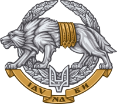
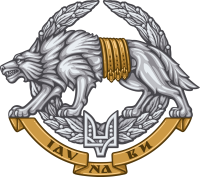

Структурно поділене на 3 види та 3 окремі роди військ:
Сухопутні війська
Повітряні сили
Військово-морські сили
Десантно-штурмові війська
Сили спеціальних операцій
Сили територіальної оборони
ЗСУ забезпечують охорону повітряного простору держави та підводного простору у межах територіального моря, стримування збройної агресії проти України та надання їй відсічі.

 

Прапори СВ, ПС, ВМС, емблеми десантно-штурмових військ, ССО та ТРО
В умовах сучасних збройних конфліктів, коли наявні балістичні ракети, якими легко знищуються аеропорти і вся їх інфраструктура, ветрольоти витісняють літаки. Для зльоту, посадки і стоянки їм не потрібна ЗПС, а по варіативності виконуваних завданнь вони не поступаються їм.Гелікоптери:
Авіація ПС ЗСУ:
Універсальні - Мі-8МТ
Авіація СВ ЗСУ:
Ударні - Мі-24П
Багатофункціональні - Мі-8
Авіація ВМС ЗСУ:
Санітарні - Ка-226
Протичовнові/пошуково-рятувальні - Ка-27, Мі-14ПС, Мі-14ПЛ, Мі-14ПЛМ
Транспортно-бойові - Ка-29
Завдання вертольотів в кожному виді військ
СВ ЗСУ
Вогнева підтримка під час наступу чи контратаки та висадка десанта.
ПС ЗСУ
Розвідка, знищення бойової техніки та живої сили противника, вогнева підтримка під час наступу чи контратаки, висадка десанта і доставка особового складу.
ВМС ЗСУ
Протичовнова оборона флоту з базуванням на кораблях різного класу, виявлення сучасних підводних човнів та надводних цілей, передача данних про них на корабельні і берегові пункти, їх ураження із застосуванням бортових засобів ураження. Також виконання пошуково-рятувальних завданнь.